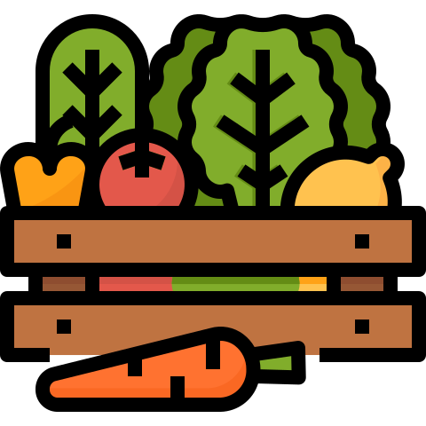
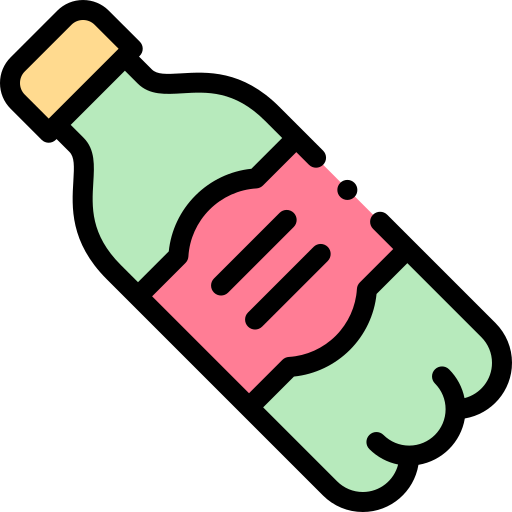

Reciclar
Transformar la mayor cantidad de residuos industriales en recursos: revalorizarlos y prepararlos para un uso superior en términos energéticos y de insumos biosustentables para la economía global. Construir en este camino un triple impacto positivo: social, económico y ambiental.

Huerta en casa
La producción de alimentos en la ciudad favorece el uso eficiente del agua, la energía y el suelo y ayuda a ahorrar energía, ya que productores y consumidores están más cerca entre sí. El traslado de las verduras
frescas desde puntos alejados causa elevados gastos de transporte y perjudica su conservación.

Uso de plásticos
La prohibición de bolsas de plástico esté vigente. Depende de nosotros llevar nuestras propias bolsas de tela, resistentes y fáciles de conseguir.
Evitar la compra de productos muy envasados.
Los sorbetes plásticos son totalmente prescindibles.
Sustituir tuppers de plástico por aquellos de vidrio.
No comprar productos desechables, por ejemplo, utensilios de cocina